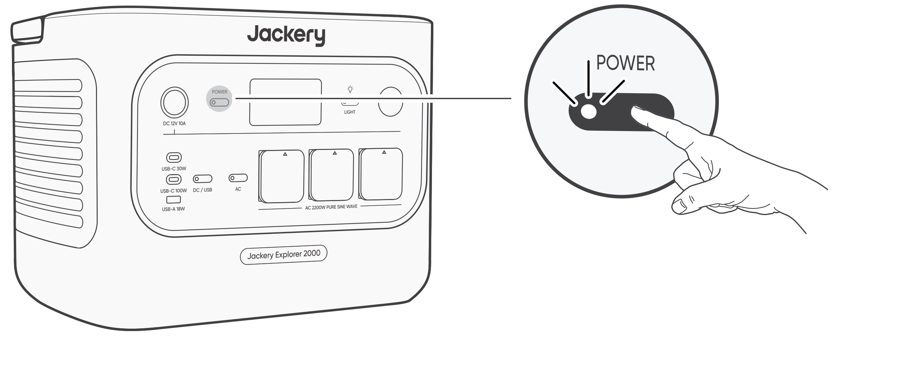
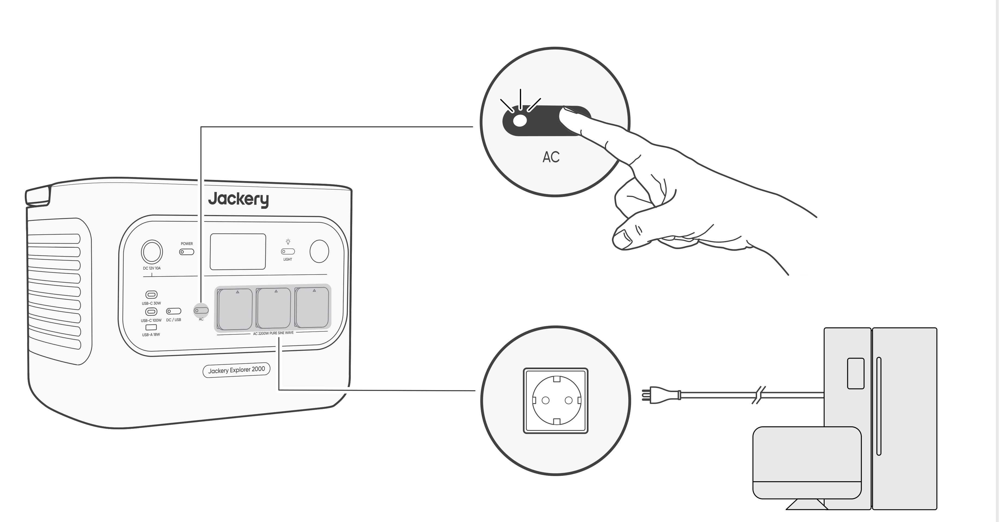
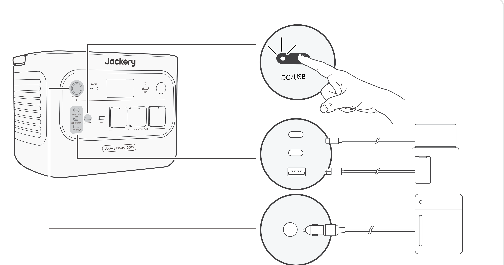

Preview on shared renderer d6b65465 with candidate illustrations. The full-target figure gate remains blocked by the missing JE-2000F/EU Overview instance; this is a three-slot layout review only. The screenshots show the figures before the adjacent source caution was appended; formal CUA browser acceptance is pending.

Voraussetzung: Das Produkt ist eingeschaltet.

Voraussetzung: Das Produkt ist eingeschaltet.

VORSICHT |
|